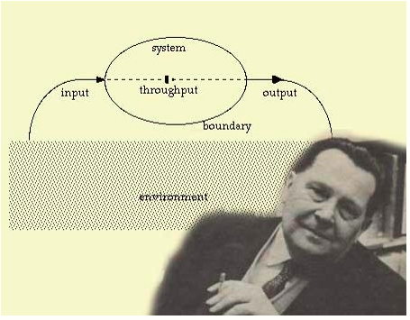

Teoría General de Sistemas
Definicion de los sistemas
La teoría de sistemas o teoría general de los sistemas es el estudio interdisciplinario de los sistemas en general. Su propósito es estudiar los principios aplicables a los sistemas en cualquier nivel en todos los campos de la investigación.
¿Qué es un sistema?
Se entiende por un sistema a un conjunto ordenado de componentes relacionados entre sí, ya se trate de elementos materiales o conceptuales, dotado de una estructura, una composición y un entorno particulares. Se trata de un término que aplica a diversas áreas del saber, como la física, la biología y la informática o computación.
A continuación, se presentan algunos tipos de sistemas:
Sistema natural
Cuando un sistema está inmerso o corresponde únicamente al funcionamiento de la naturaleza, como lo es un lago, un río, la selva, el cuerpo humano, los planetas o las galaxias, entonces hay que referirse a ellos como sistemas naturales
Sistema artificial
Los sistemas artificiales son aquellos que emergen de la creación del hombre es decir como productos de la acción humana.
Sistemas mixtos
Los sistemas mixtos se dan por la combinación de elementos naturales y artificiales. Cualquier entorno de orden físico que sufre alteraciones dadas por el ser humano, como lo son los pueblos, las ciudades, los ríos.
A continuación, se presenta un breve significado de sistemas de información:
La definición de dato
Un dato no es otra cosa que una representación simbólica de alguna situación o suceso, sin ningún sentido semántico, describiendo un hecho concreto. O lo que es lo mismo, sin transmitir mensaje ninguno, un ejemplo de dato podría ser una letra o un hecho.
La definición de Información
La información se define como un conjunto de datos los cuales son adecuadamente procesados, para que de esta manera, puedan proveer un mensaje que contribuya a la toma de decisiones a la hora de resolver un problema o afrontar una situación cualquiera en la que se requiera de la toma de decisiones de cualquier tipo.